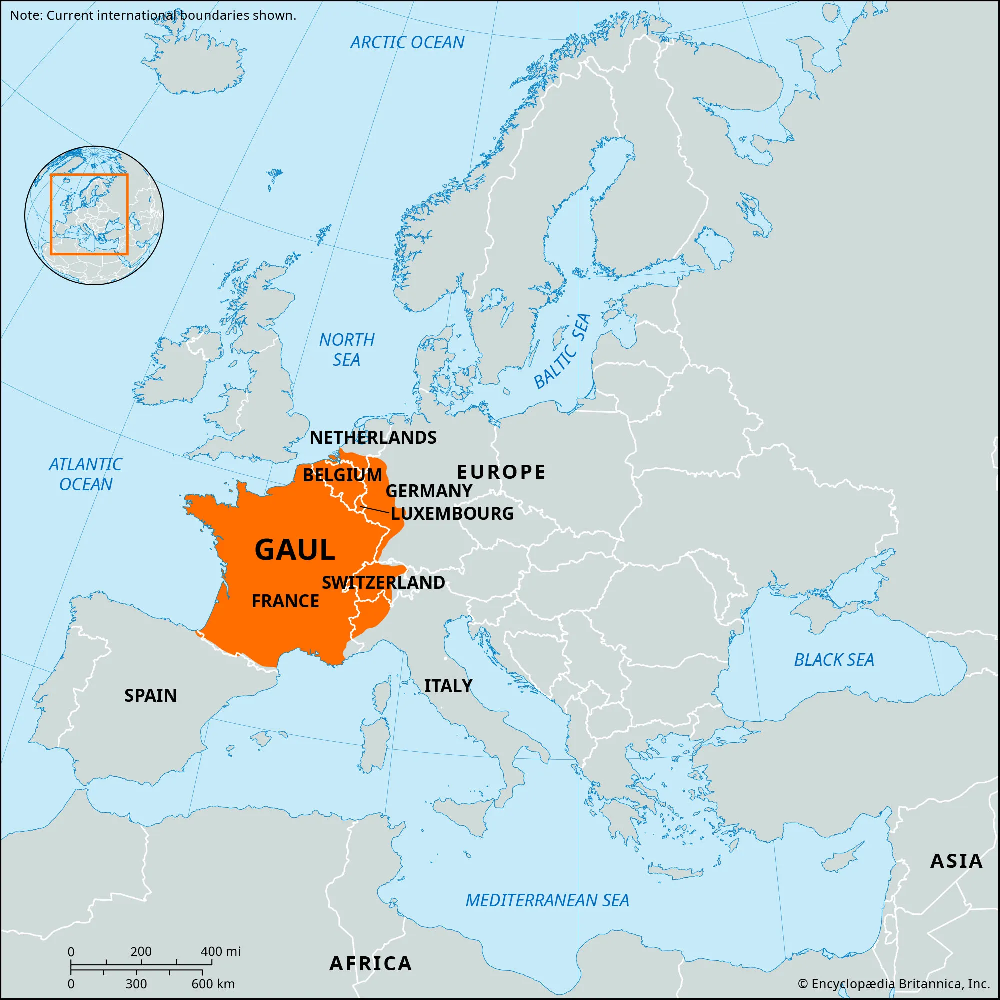
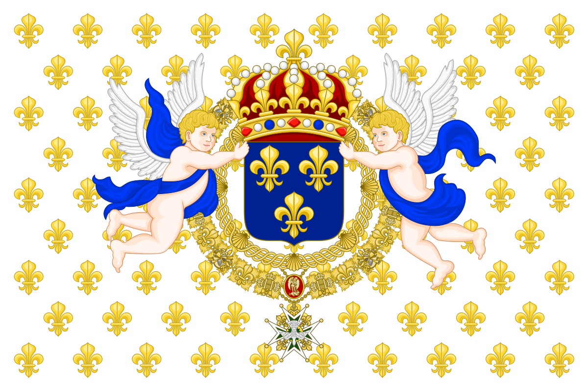
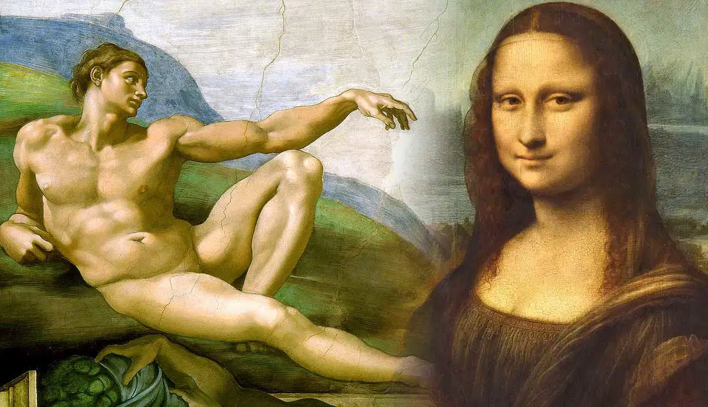
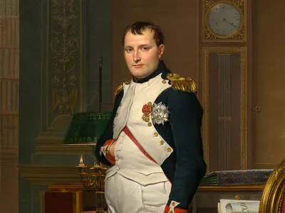

Historical events that shaped France today
Ancient Gaul and Roman Rule
Before France existed, the region was known as Gaul, home to Celtic tribes called the Gauls. In 51 BCE, Julius Caesar and the Roman Empire conquered the area and brought Roman laws, roads, and culture.
This period helped shape early French society. Over time, Roman towns grew, and Latin became the main language, eventually evolving into French.

The Middle Ages and the Rise of the French Kingdom
After the fall of the Roman Empire, the Franks, led by kings like Clovis and Charlemagne, became powerful. France slowly turned into a unified kingdom during this time.
The Middle Ages also saw the construction of famous cathedrals such as Notre-Dame. Conflicts like the Hundred Years’ War helped define France’s territory and national identity.

The Renaissance and Cultural Growth
From the 1500s onward, France entered the Renaissance, a time of art, science, and learning. Kings like Francis I encouraged artists and thinkers, bringing new ideas from Italy.
This era saw the rise of beautiful architecture and literature. Despite cultural growth, France also faced religious conflict between Catholics and Protestants, which shaped politics for many years.

The French Revolution and Napoleon
In 1789, the French Revolution began because people were unhappy with high taxes, unfair laws, and royal power.
The monarchy was overthrown, and France experimented with new forms of government. Soon after, Napoleon Bonaparte rose to power, becoming emperor and spreading French influence across Europe.
Though eventually defeated, his reforms helped modernize France.

Modern France: World Wars to Today
In the 20th century, France fought in both World Wars and faced major rebuilding afterward. The country rebuilt its cities, economy, and government, becoming a strong democracy.
France also became a key member of the European Union. Today, it is known for its culture, technology, and global influence, blending a long history with modern innovation.